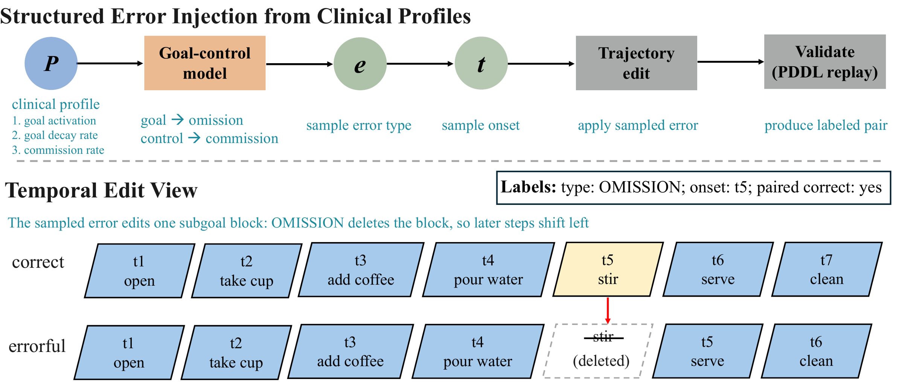

Household benchmarks ask what a person wants to do. HelpMeOut asks whether their ongoing execution is going wrong, when, and how.
A monitor sees the task, the initial scene, and the actions so far, never the future. After every step it must say whether an error has occurred, whether it happens at this step, and which kinds of error have appeared. Step through an instant-coffee episode.
Each metric isolates one part of the monitoring problem, so a single accuracy number cannot hide where a method fails.
Trajectory-level discrimination: does this episode contain an error?
Step-level detection: is the error happening at this step?
First-alarm timing: is the first alarm early, on target, late, or missing?
Error-type diagnosis over the nine categories, accumulated over the episode.
The categories follow clinical studies of everyday action (NAT / MLAT). Every errorful trajectory stays physically executable: the person can carry out each action, but the execution is wrong for the task.
Break the structure or order of the task.
Corrupt the choice of object, tool, location, or action.
A symbolic household domain turns ADL / IADL routines into paired correct and errorful episodes, with error rates calibrated to clinical populations.

@article{wang2026helpmeout,
title = {HelpMeOut: A Neuropsychology-Grounded Benchmark for Error-Aware Monitoring of Household Task Execution},
author = {Wang, Haoran and Huang, Jingwei and Duan, Anqing and Ahn, Ho Seok and Macdonald, Bruce},
journal = {arXiv preprint arXiv:2610.17694},
year = {2026}
}